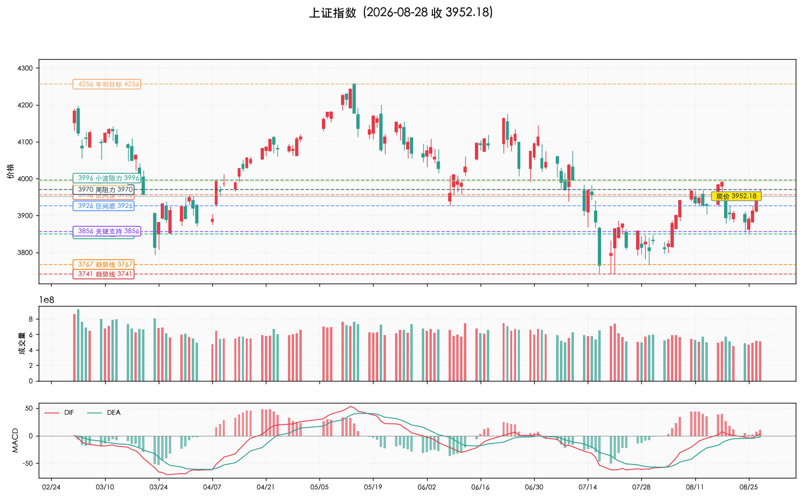
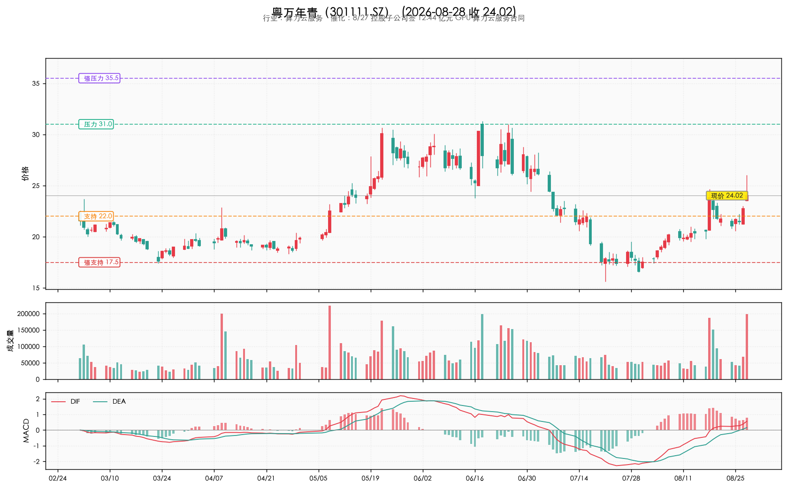
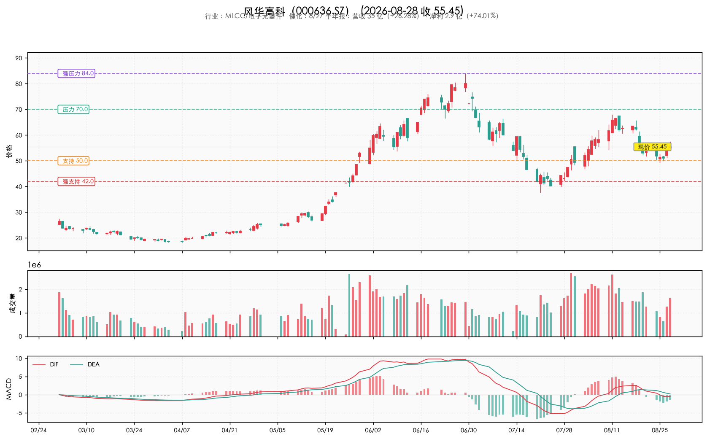
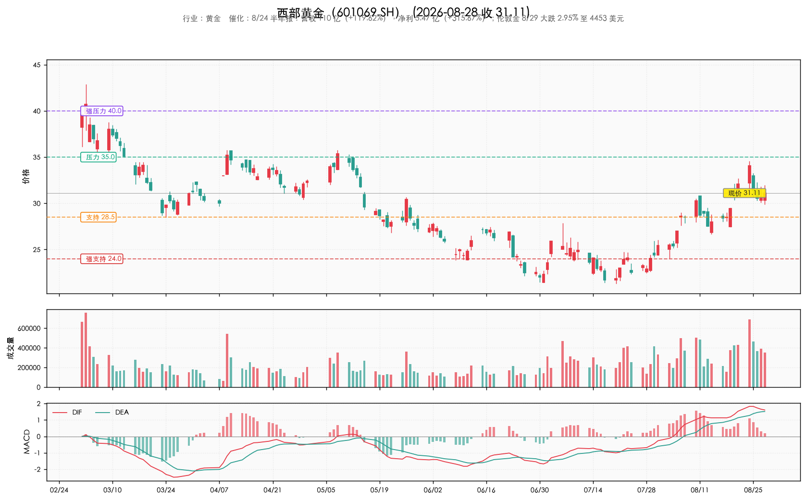
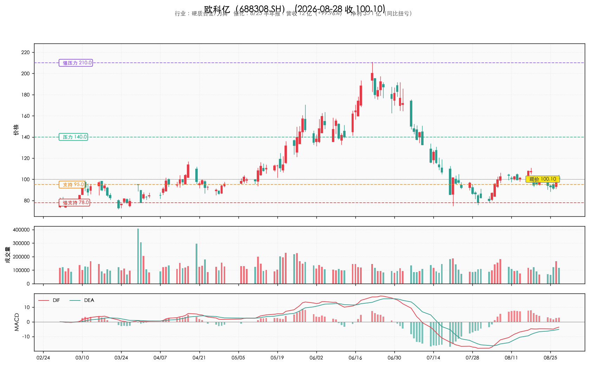
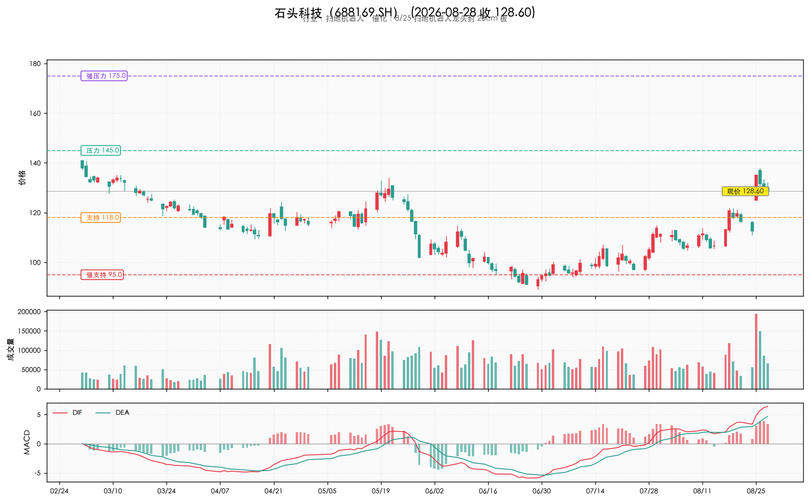
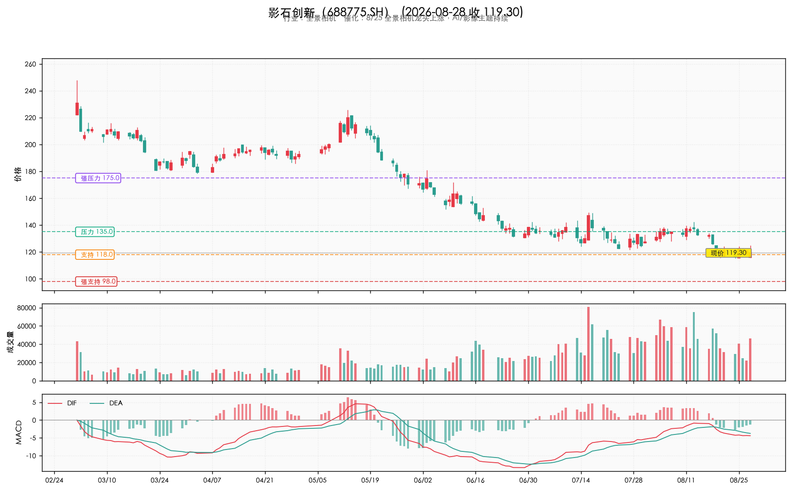

关键位虚线标注，标签居左；下方依次为成交量、MACD 指标。

代表事件：粤万年青 8/27 公告控股子公司万宏智算与 A 公司签 5 年 12.44 亿元 GPU 算力云服务合同。
投资逻辑：
关注：粤万年青（301111）、其他算力租赁/云服务概念股。
代表事件：8/25 扫地机器人龙头封 20cm 板（石头科技），全景相机、投影仪龙头同步上涨。
投资逻辑：
关注：石头科技（688169）、影石创新（688775）、科沃斯（603486）。
代表事件：8/28 博主原话："主板则得益于银行、煤炭、保险、券商等权种力量的加持收红"。
投资逻辑：
关注：四大行 + 煤炭 ETF + 中国平安 + 头部券商（ETF 工具更优）。
催化：8/27 控股子公司签 12.44 亿元 GPU 算力云服务合同（5 年）
关键位： 压力 31.0强压力 35.5支持 22.0强支持 17.5

催化：8/27 半年报：营收 35 亿（+26.28%），净利 2.9 亿（+74.01%）
关键位： 压力 70.0强压力 84.0支持 50.0强支持 42.0

催化：8/24 半年报：营收 110 亿（+119.62%），净利 5.47 亿（+315.67%）；伦敦金 8/29 大跌 2.95% 至 4453 美元
关键位： 压力 35.0强压力 40.0支持 28.5强支持 24.0

催化：8/25 半年报：营收 12 亿（+99.96%），净利 3.71 亿（同比扭亏）
关键位： 压力 140.0强压力 210.0支持 95.0强支持 78.0

催化：8/25 扫地机器人龙头封 20cm 板（wu2198 亲点）
关键位： 压力 145.0强压力 175.0支持 118.0强支持 95.0

催化：8/25 全景相机龙头上涨，AI/影像主题持续
关键位： 压力 135.0强压力 175.0支持 118.0强支持 98.0

| 类型 | 点位 | 说明 |
|---|---|---|
| 强压力 | 4256 | 年初目标（已实现后回吐） |
| 压力 | 3994-3996 | 小波段前高 / 阻力 |
| 压力 | 3970 | 本周周线阻力 |
| 区间顶 | 3956 | 3856-3926-3956 震荡区间 |
| 区间底 | 3926 | 同上 |
| 关键支持 | 3856 | 多空分水岭 |
| 阶段低 | 3850 | 8/24 试 3855.35 |
| 趋势线 | 3767 / 3741 | C 浪下探目标 |
| 代码 | 名称 | 行业 | 现价 | 强支持 | 支持 | 压力 | 强压力 |
|---|---|---|---|---|---|---|---|
301111.SZ |
粤万年青 | 算力云服务 | 24.02 | 17.5 | 22.0 | 31.0 | 35.5 |
000636.SZ |
风华高科 | MLCC/电子元器件 | 55.45 | 42.0 | 50.0 | 70.0 | 84.0 |
601069.SH |
西部黄金 | 黄金 | 31.11 | 24.0 | 28.5 | 35.0 | 40.0 |
688308.SH |
欧科亿 | 硬质合金/刀具 | 100.10 | 78.0 | 95.0 | 140.0 | 210.0 |
688169.SH |
石头科技 | 扫地机器人 | 128.60 | 95.0 | 118.0 | 145.0 | 175.0 |
688775.SH |
影石创新 | 全景相机 | 119.30 | 98.0 | 118.0 | 135.0 | 175.0 |